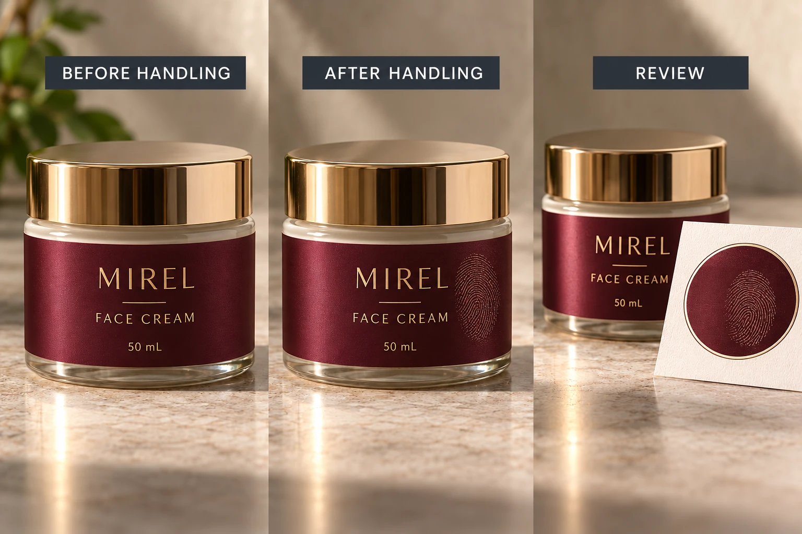

Specify the moment that matters
Decide whether the concern is the unopened retail pack, a store display sample, the pack after unboxing or the container during repeated use. Those moments can justify different appearance expectations. A collector's presentation carton and a bathroom pump handled every day do not necessarily need the same visual acceptance rule.
Write the observation as an answerable question. For example: after the agreed ordinary handling, does the large dark panel still present the brand as intended under the selected viewing conditions? This is more useful than asking for a finish that never shows anything.
Keep fingerprints separate from scratches, abrasion, residue from the cosmetic product and adhesion changes. Several events can occur on one bottle, but a review of hand-contact appearance does not establish resistance to all of them. If the main concern is contact with lotion or oil, identify that separately in the sample brief.
Compare complete printed constructions
The supplier should identify the film or coating, printed design and other relevant layers. A generic sample marked soft touch may help start a discussion. It cannot establish the behavior of a different product merely because its quotation uses the same description.
Our matte laminate and varnish guide addresses finish identity. Here, the decision comes afterward: which identified sample meets the agreed appearance objective after handling?
Use the intended artwork where practical. A nearly empty pale sample and a large dark production panel can give reviewers very different visual impressions. If the sample design differs, record that limitation. Do not claim the finish alone caused every difference between two unrelated packages.
Also identify the container. Curvature and the way people hold the package affect where an observation appears. A flat sample is useful for comparison, while an applied sample helps the brand decide whether that difference matters on the actual pack.
Set up a review that another person can repeat
Ask the supplier which sample preparation and conditioning apply. Have the project team define ordinary handling for this review and record it simply: what part is touched, by whom, under what agreed conditions, and when the appearance is examined. Avoid presenting an arbitrary touch count as an industry standard.
Keep an untouched reference from the same identified sample set. Use consistent light, viewing angle and background when making the direct comparison. Include both an overall pack view and a closer view of the affected area. The closeup locates the mark; the overall view establishes its importance to the presentation.
If cleaning is part of the intended review, obtain the supplier's permitted method first and record it as another stage. Do not improvise solvents or intensive rubbing to rescue a sample. A cleanable mark, a persistent change and a surface damaged by an unsupported cleaning method are different findings.
Use a handling-appearance decision sheet
The following sheet is an editorial coordination method. It supplies no universal score or pass threshold.
| Field | Record before comparison | Decision it enables |
|---|---|---|
| Presentation moment | Retail, display, unboxing or intended use | Which expectation applies? |
| Sample identity | Artwork, finish, construction and container | What exactly is being compared? |
| Handling | Agreed contact and preparation | Can the observation be interpreted? |
| Viewing | Lighting, angle and background | Are apparent differences comparable? |
| Observation | Location and visible change | Is the concern local or central to the design? |
| Optional cleaning | Supplier-permitted method and result | Does an accepted restoration route exist? |
| Acceptance | Named brand reviewer and reference | What scope is actually approved? |
Complete the first four rows before handling the samples. Record the observation without assigning a technical cause. Then have the brand reviewer decide whether it meets the stated presentation requirement, needs another proposal or requires technical investigation. Keep the accepted physical reference identifiable.
Leave acceptance pending if the compared samples have different unrecorded finishes or if a cleaning attempt changed the surface. Ask for a controlled comparison rather than converting an uninterpretable result into a blanket rejection of matte labels.

Let appearance and practical use meet
A hypothetical brand may accept a subtle mark that is visible only in an extreme closeup, provided its agreed normal presentation still works. Another brand may reject a conspicuous change across its central dark logo panel. Both decisions can be reasonable when the reference and viewing conditions are explicit.
A revised graphic arrangement might reduce the importance of the touched area. A different identified finish may offer a better accepted sample. Compare both routes with the designer and supplier, including changes to appearance and quotation scope. Do not assume the only answer is the most expensive protective layer.
For custom cosmetic labels, provide the container, artwork, dimensions and quantity per design. Identify the handling moment, current finish and appearance question. The inquiry form prepares a message; send sample photographs and supporting records by email or WhatsApp. Ask for a representative finished sample and an agreed review scope before approving the surface from an untouched photograph.